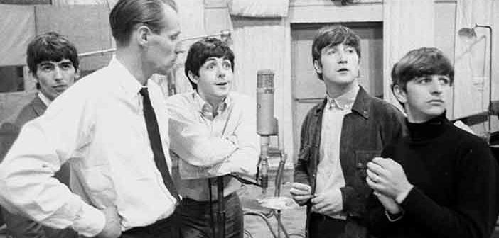
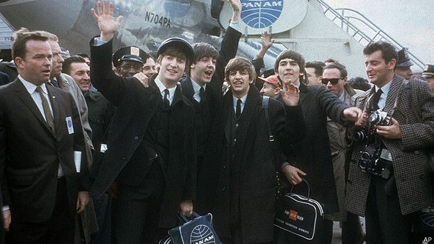
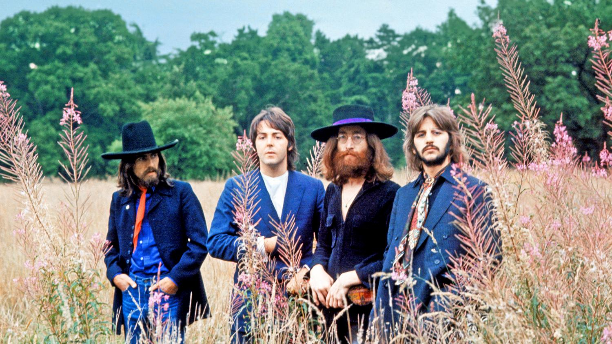

Fue creada y liderada por John Lennon, cuando era aún un adolescente, y luego se sumaron otros dos futuros miembros de Los Beatles, Paul McCartney y George Harrison. La banda tomó su nombre de la escuela Quarry Bank High School (renombrada luego Calderstones School), debido a que Lennon y varios de sus miembros fundadores eran alumnos del colegio. Formó parte de la llamada locura del skiffle (skiffle craze) y el surgimiento del rock and roll británico, e integró el movimiento beat, también llamado merseybeat, que caracterizó a Liverpool y su área de su influencia.
El 6 de julio de 1957, durante una presentación de The Quarry Men en la iglesia de San Pedro de Woolton, se conocieron Lennon y McCartney y este último pasó a integrar la banda, lo que dio origen a uno de los dúos creativos más famosos de la historia de la música. Poco después, McCartney logró que George Harrison ingresara también a la banda, pese a las objeciones iniciales de Lennon debido a su escasa edad. The Quarry Men grabó un disco simple con las canciones That'll Be the Day, de Buddy Holly y In Spite of All the Danger, de Harrison y McCartney. Luego de que Stuart Sutcliffe se uniera al grupo, a comienzos de 1960, se inició un proceso de cambio de nombres: se sucedieron «The Beetles», "The Silver Beetles", "The Beatals", "The Silver Beets", "The Silver Beatles", "Long John and the Silver Beetles", hasta decantar en The Beatles en agosto de 1960, en el momento preciso que realizaron el primer viaje hacia Hamburgo.
En abril de 1961 Los Beatles iniciaron una segunda serie de actuaciones en Hamburgo durante tres meses, tocando en el Top Ten Club. Contratados por Bert Kaempfert y bajo el nombre de "The Beat Brothers", grabaron varias canciones como banda de apoyo del cantante Tony Sheridan, entre ellas «My Bonnie», que fue editada como sencillo y alcanzó el número 32 en la lista Musikmarkt. A comienzos de 1962 las canciones grabadas con Sheridan fueron lanzadas en el álbum My Bonnie, que incluye dos temas interpretados exclusivamente por Los Beatles: «Ain't She Sweet», cantada por John y el instrumental "Beatle Bop".
En noviembre de 1961, Brian Epstein, dueño de una tienda de discos local y columnista de música, se entusiasmó con la banda después de oírlos en el Cavern Club, donde tocaban al mediodía.77 De inmediato, Epstein se propuso ser su representante, hecho que se formalizaría a mediados de enero de 1962.78 Simultáneamente, Kaempfert acordó liberarlos del contrato discográfico alemán. Antes de ello, Epstein logró que la compañía discográfica Decca Studios les realizara una prueba conocida como la audición de Decca, que se concretó el 1 de enero de 1962, en la que grabaron 15 temas, entre ellos tres de autoría de Lennon y McCartney («Like Dreamers Do», «Hello Little Girl» y «Love of the Loved»). Decca sin embargo decidió no editar la grabación con el comentario «los grupos de guitarra están en pleno declive, señor Epstein», que era la opinión general de la industria discográfica en ese momento.79 Esta decisión es considerada uno de los mayores errores en la historia de la música popular.80 Para entonces, en Liverpool se volvía cada vez más popular el movimiento conocido como Merseybeat, es decir la música beat de Mersey, refiriéndose a la región norteña en la que se encuentra la ciudad. El 10 de abril de 1962 partieron para una nueva temporada en Hamburgo, para tocar 42 días en el Star-Club. Ese mismo día recibieron la trágica noticia de que Sutcliffe había muerto a causa de una hemorragia cerebral. La banda tuvo su primera sesión de grabación en Londres, bajo la dirección de Martin, en los EMI Studios el 6 de junio de 1962, registrándose cuatro temas: «Besame Mucho», Love Me Do, P-S. I Love You y Ask Me Why, estos últimos tres de Lennon-McCartney. Las cintas originales de aquella grabación fueron destruidas por rutina, pero al menos fueron preservadas dos grabaciones monoaurales. De allí fueron tomados los dos primeros temas, que fueron incluidos en Anthology 1.
A Martin no le convenció la habilidad con la que tocaba la batería Pete Best, sugiriéndole privadamente a Epstein que lo cambiasen por un batería de sesión en el estudio. Finalmente, Best fue remplazado por Ringo Starr. Starr, que dejó a Rory Storm and the Hurricanes para unirse a The Beatles, ya había actuado con ellos en algunas ocasiones, sobre todo cuando Best estaba enfermo. Sin embargo, Martin ya había contratado al batería de sesión Andy White para la siguiente sesión de grabación, y White tocó la batería en «Love Me Do» y «P.S. I Love You». Lanzado en octubre, «Love Me Do» alcanzó el número diecisiete en la lista británica Record Retailer. Posteriormente, en el mes de noviembre comenzaron a grabar lo que sería su segundo sencillo, «Please Please Me». Hicieron su debut en la televisión al emitirse una actuación suya en directo en el programa regional People and Places, de la Granada Television.
Concluyeron su quinta y última temporada de Hamburgo el 31 de diciembre de 1962.arias interpretaciones en vivo de la misma fueron grabadas en un aparato casero y lanzadas como álbum en 1977 bajo el título de Live! at the Star-Club in Hamburg, Germany; 1962. En las versiones británica y estadounidense del álbum se incluyeron 30 canciones, pero solo dos temas de Lennon-McCartney: «I Saw Her Standing There» y «Ask Me Why». Entre los covers se incluyen varias canciones incluidas en los álbumes de Los Beatles, como «Roll Over Beethoven», «Twist and Shout», «Mr. Moonlight» y «A Taste of Honey». El álbum incluye también la versión del bolero «Bésame Mucho» que Los Beatles hacían en sus años iniciales. En ese momento acordaron que los cuatro contribuirían como vocalistas dentro del grupo, aunque el rango restringido de Starr hizo que rara vez fuese el líder vocal. Lennon y McCartney establecieron una asociación para componer canciones; al comprobar que aumentaba el éxito del grupo, la celebrada colaboración entre ellos limitó las oportunidades de Harrison de ser vocalista principal. A comienzos de 1963 se fundó la empresa Northern Songs para comercializar las canciones de Los Beatles; la operación ha sido cuestionada como abusiva, otorgando una baja participación de la pareja Lennon-McCartney y una participación marginal de Harrison y Starr. Harrison compuso una canción crítica de aquella operación titulada «Only a Northern Song», incluida en el álbum «Yellow Submarine».
Después del moderado éxito de «Love Me Do», «Please Please Me» recibió una acogida más enfática, alcanzando el número dos en el Record Retailer en enero de 1963 después de su lanzamiento. Martin originalmente tenía previsto grabar el disco debut de The Beatles en vivo en el Cavern Club. Finalmente esta idea fue cambiada, y se eligió crear un álbum «en vivo» de una sola sesión en los EMI Studios. Diez canciones fueron grabadas para Please Please Me, acompañadas en el álbum por los cuatro temas que ya habían sido publicados en los dos sencillos. Recordando la «urgencia que tenían por publicar su álbum de debut, y dándose la paliza para grabar Please Please Me en un solo día», un crítico de Allmusic comentaba: «Décadas después de su lanzamiento, el álbum todavía suena fresco, precisamente a causa de su origen tan intenso». Lennon dijo que apenas se estrujaron la cabeza a la hora de componer las canciones en aquel tiempo; él y McCartney estaban «simplemente escribiendo canciones a lo Everly Brothers, al estilo de Buddy Holly, canciones pop sin tener más complicaciones que eso: crear un sonido. Y las palabras eran casi irrelevantes». Lanzado en marzo de 1963, el álbum alcanzó el número uno en las listas británicas. El tercer sencillo que publicaron, «From Me to You», fue lanzado en abril y también alcanzó la cima de las listas de éxitos. A partir de ese momento se inició una racha casi ininterrumpida de diecisiete sencillos editados por The Beatles, que alcanzaron el número uno en las listas británicas, incluyendo todos los que se publicaron en los siguientes seis años, a excepción de uno. Lanzado en agosto, el cuarto sencillo, «She Loves You», alcanzó el récord de mayor número de copias vendidas en el Reino Unido hasta ese momento, vendiendo cerca de 750 mil copias en menos de cuatro semanas.
Se convirtió en su primer sencillo en vender un millón de copias, y siguió teniendo el récord en el Reino Unido hasta 1978, cuando fue superada por «Mull of Kintyre», interpretada por McCartney y su grupo posterior a la separación de The Beatles, Wings.99 La popularidad de su música les proporcionó una creciente atención de la prensa, a la que ellos respondieron con una descarada e irreverente actitud, que acabó por apartarse de los rasgos característicos de las figuras más importantes de la música pop y que, incluso, inspiró mayores intereses. A medida que su popularidad se extendió, apareció una adulación desenfrenada hacia ellos, también llamada «Beatlemanía». Aunque no se anunciaron como los cabecillas de gira, los otros artistas que participaron fueron Tommy Roe, Chris Montez y Roy Orbison, artistas estadounidenses que habían establecido una gran popularidad en el Reino Unido. Las actuaciones en todas partes, tanto en la gira como en los espectáculos fuera del Reino Unido, fueron recibidas con un entusiasmo desenfrenado por los fanáticos que no paraban de gritar. La policía se vio obligada a usar agua a alta presión con mangueras para poder controlar a las multitudes, y hubo debates en el Parlamento sobre los miles de policías que ponían en riesgo sus vidas para protegerlos. A finales de octubre, una gira de cinco días por Suecia se convirtió en la primera visita que hicieron al extranjero desde sus días en Hamburgo. Please Please Me estaba todavía en lo más alto de las listas. Se mantuvo en esa posición durante treinta semanas, sólo para ser desplazado por With The Beatles, que se colocó en el primer lugar durante veintiún semanas. Haciendo mayor uso de las técnicas de producción que usaron en el LP predecesor, el álbum fue grabado entre julio y octubre. With The Beatles es descrito por Allmusic como «una secuela al más alto nivel que mejora al original mediante el desarrollo de un tono propio y la adición de profundidad».En un cambio de lo que hasta entonces había sido la práctica habitual, el álbum fue lanzado a fines de noviembre antes del inminente sencillo «I Want to Hold Your Hand», excluyendo a esta canción con el fin de maximizar las ventas del sencillo homónimo. With The Beatles llamó la atención del crítico musical de The Times William Mann, que fue tan lejos como para sugerir que Lennon y McCartney eran «los compositores ingleses más destacados de 1963». El periódico publicó una serie de artículos en los que Mann ofreció un análisis detallado de la música de The Beatles, lo cual les otorgó una mayor respetabilidad. With The Beatles se convirtió en el segundo álbum en la historia del Reino Unido en vender un millón de copias, una cifra que solo fue alcanzada previamente por la banda sonora de la película estadounidense South Pacific, de 1958.
Cuando abandonaron el Reino Unido el 7 de febrero de 1964, unos cuatro mil aficionados reunidos en Heathrow comenzaron a saludar y gritar cuando la aeronave despegó. «I Want to Hold Your Hand» había vendido 2,6 millones de copias en los Estados Unidos durante las dos semanas anteriores, pero aún sentían cierta incertidumbre sobre el recibimiento que tendrían a su llegada. Al llegar al recién rebautizado Aeropuerto Internacional John F. Kennedy fueron recibidos por otra multitud vociferante, estimada en alrededor de tres mil personas. Su primera aparición estadounidense la llevaron a cabo en el programa The Ed Sullivan Show el 9 de febrero de 1964, siendo vistos por aproximadamente 74 millones de espectadores. A la mañana siguiente un periódico escribió que The Beatles «no podían llevar la misma musiquilla cruzando el Atlántico», pero un día después de su presentación debut en Estados Unidos, por primera vez la Beatlemanía se hizo ver en el Washington Coliseum. De vuelta a Nueva York el día siguiente, se presentaron con otra gran acogida en el Carnegie Hall. Después de una semana aparecieron en el Ed Sullivan Show por segunda vez, antes de regresar al Reino Unido el 22 de febrero. Durante la semana del 4 de abril habían logrado situar doce de sus canciones en el Billboard Hot 100, incluyendo los cinco primeros lugares. Esa misma semana, un tercer LP estadounidense se unió a los otros dos que ya estaban en circulación. Los tres llegaron a los primeros lugares en la lista estadounidense de álbumes. El éxito que habían obtenido en los Estados Unidos provocó la denominada invasión británica: la llegada de una serie de nuevas formaciones musicales británicas que lograron ser populares en Estados Unidos después de la llegada de The Beatles.
A Hard Day's Night, hizo que se les viese como «una verdadera banda cohesionada. Todas las influencias dispares de sus dos primeros álbumes se habían fundido esta vez de forma brillante, alegre y original, llena de sonidos de guitarras». Este «sonido de guitarra» fue principalmente producto de Harrison y su guitarra eléctrica de 12 cuerdas Rickenbacker. Su cuarto álbum de estudio, Beatles for Sale, vio el comienzo de un serio conflicto entre el comercialismo y la creatividad. Grabado entre agosto y octubre de 1964, se tuvo la intención de continuar con el formato establecido en A Hard Day's Night, que a diferencia de los primeros dos LP, este incluía únicamente composiciones originales de ellos.Reconociendo el desafío que planteaba el dar constantes conciertos por todo el mundo, sus esfuerzos de componer nuevas canciones fueron en vano. Finalmente, fueron incluidas seis versiones en su nuevo álbum de estudio. En Help! se les vio con una mayor utilización de doblajes vocales y la incorporación de instrumentos clásicos en sus arreglos, especialmente el cuarteto de cuerdas de la balada «Yesterday».Compuesta por McCartney, «Yesterday» posee el récord de ser la canción más versionada de la historia de la música. El 15 de agosto de 1965, en su tercera visita a Estados Unidos, llevaron a cabo el concierto en el Shea Stadium de Nueva York, ante una multitud de 55 600 personas. Rubber Soul, lanzado a principios de diciembre, fue aclamado por la crítica como un gran paso en la madurez y la complejidad de su música.El biógrafo y crítico musical Ian MacDonald comentó que con Rubber Soul, The Beatles «recuperaron la dirección que habían comenzado a perder durante las últimas etapas con su trabajo en Beatles for Sale». Después de que en Help! incursionasen en el mundo de la música clásica con cuerdas y flautas, la introducción en Rubber Soul de un sitar en «Norwegian Wood (This Bird Has Flown)» marcó un avance más allá de los límites tradicionales de la música rock. Además, también demostró que Lennon y McCartney estaban menos complementados en sus composiciones, cada vez más diferentes entre sí (aunque seguían compartiendo crédito oficial). Su alcance temático estuvo en plena expansión, englobando los aspectos más complejos del romance y otro tipo de preocupaciones en sus canciones. Como sus letras se hicieron más ingeniosas, los fanáticos comenzaron a estudiarlas para encontrar su verdadero significado.
Al poco tiempo, a punto de comenzar la tercera gira por Estados Unidos, se encontraron con la reacción furibunda de algunos de los religiosos y conservadores de aquel país, debido a un comentario que Lennon había hecho el marzo pasado: en una entrevista con la periodista británica Maureen Cleave, opinó que la religión cristiana estaba por entonces en franco declive, y que The Beatles eran en ese momento más populares que Jesucristo.El comentario pasó prácticamente desapercibido en Inglaterra, pero cuando la revista Datebook la publicó en Estados Unidos, se creó una gran controversia entre los grupos religiosos del sur de Estados Unidos. Finalmente, Lennon tuvo que disculparse públicamente por su comentario en una conferencia de prensa en Chicago el 11 de agosto de 1966. Rubber Soul había marcado un gran paso hacia adelante en la música de The Beatles; Revolver, lanzado en agosto de 1966, una semana antes de su última gira, marcaría otro paso más para el grupo.En Revolver se destacan las sofisticadas composiciones y un repertorio muy amplio de estilos musicales, que van desde innovadores arreglos de cuerda clásica hasta el rock psicodélico. Abandonando la típica fotografía que hasta ese momento era norma, la portada del álbum, consistió ahora en un «collage artístico en blanco y negro que tenía caricaturizada la imagen de The Beatles en un corral de tinta al estilo de Aubrey Beardsley». El álbum fue precedido por el sencillo «Paperback Writer», con «Rain» en la cara B del disco. The Beatles rodaron cortometrajes promocionales para ambas canciones, que están considerados como «auténticos primeros videos musicales de entre los que se rodaron en aquella época», y que fueron transmitidos en los programas Top of the Pops y The Ed Sullivan Show. En menos de siete meses, después de grabar Revolver, volvieron a los estudios de grabación de EMI el 24 de noviembre de 1966 para empezar a grabar su octavo álbum, Sgt. Pepper's Lonely Hearts Club Band. Emerick recordó: «The Beatles insistieron en que todo en el Sgt. Pepper tenía que ser diferente. Teníamos instalados micrófonos dentro de las campanas de los instrumentos de metal, y los auriculares se convirtieron en micrófonos unidos a los violines. Solíamos usar gigantes osciladores primitivos para variar la velocidad del sonido de los instrumentos y la voz, y teníamos cintas cortadas en pedazos y pegadas de nuevo aleatoriamente y al revés»Cerca de 700 horas de tiempo de estudio se dedicaron a las sesiones. Primero se produjo el sencillo independiente de doble lado A «Strawberry Fields Forever»/«Penny Lane» en febrero de 1967; el Sgt. Pepper le siguió en junio. La complejidad de las grabaciones musicales, creadas usando sólo tecnología de grabación a cuatro pistas, asombró a artistas contemporáneos que buscaban superar a The Beatles. Para el líder de The Beach Boys, Brian Wilson, en medio de una crisis personal y dificultades para completar su ambicioso álbum Smile, el oír «Strawberry Fields» fue un duro golpe y pronto abandonó todos los intentos de competir con The Beatles. Magical Mystery Tour, la banda sonora de una próxima película de The Beatles, apareció como un doble EP de seis temas a principios de diciembre de 1967.En los Estados Unidos las seis canciones aparecieron en un LP titulado de la misma manera, en el que se incluyeron también los temas de sus últimos sencillos. Allmusic opina sobre el Magical Mystery Tour americano: «El sonido psicodélico de este disco está muy a la par del Sgt. Pepper, e incluso se encuentra más acentuado en algunas partes de él (especialmente en los collages de sonido de 'I Am the Walrus')», y califica a sus cinco canciones extraídas de los sencillos que publicaron en 1967 como «enormes, gloriosas e innovadoras».
El álbum estableció un nuevo récord en sus primeras tres semanas de venta inicial en los Estados Unidos, el más alto de cualquier otro LP de Capitol, y es una compilación de Capitol que después fue adoptada en el canon oficial de los álbumes de estudio de The Beatles. Entretanto, apareció lo que sería el álbum The Beatles, un doble LP popularmente conocido como el White Album debido a su funda totalmente blanca. En contraposición a las anteriores fundas o cubiertas, el Álbum Blanco contrastaba con anteriores diseños de las cubiertas de estilo pop-art como los que realizaba Peter Blake.La inspiración creativa para este álbum llegó desde una nueva dirección, cuando, faltando la presencia rectora de Epstein, la banda se volvió hacia el Maharishi Mahesh Yogi para hacerlo su gurú. En su ashram en Rishikesh, India, la impartición de un «curso-guía» de tres meses se convirtió en uno de sus períodos más creativos, produciendo allí un gran número de canciones, incluyendo la mayor parte de las treinta grabadas para el álbum. Starr se marchó después de diez días de estancia allí, comparando aquel lugar con un campamento familiar de verano, y McCartney finalmente se aburrió con el procedimiento de sus compañeros en aquel lugar y se fue un mes después. Para Lennon y Harrison la creatividad se tornó en cuestionamiento cuando Yanni Alexis Mardas, técnico de electrónica conocido como Magic Alex, sugirió que el Maharishi estaba tratando de manipularles. Durante las sesiones de grabación para el álbum, que se extendieron desde fines de mayo hasta mediados de octubre de 1968, las diferencias y los desacuerdos comenzaron a dividirlos. Starr los dejó por un tiempo, lo que hizo que siguiesen adelante con McCartney tocando la batería en varios temas. El romance de Lennon con la artista vanguardista Yoko Ono contribuyó a crearles tensiones, haciendo que Lennon perdiese el interés en escribir canciones con McCartney. Desobedeciendo el acuerdo que ellos mismos establecieron de no llevar parejas al estudio, Lennon insistió en llevar a Ono a todas las sesiones de grabación, situación que no le agradaba a Harrison. Publicado en noviembre, el White Album fue el primer álbum de The Beatles editado por Apple Records. El sello discográfico era una de las divisiones de la empresa Apple Corps, formada por el grupo a su regreso de la India, cumpliendo así un plan previo de Epstein de crear una estructura empresarial efectiva para administrar mejor los impuestos a pagar. El álbum tuvo más de dos millones de pedidos anticipados, vendiendo casi cuatro millones de copias en los Estados Unidos en poco más de un mes, y sus temas dominaron las listas de las emisoras de radio estadounidenses. Para ese entonces, el interés por las letras de The Beatles estaba tomando un aspecto serio. Cuando la canción de Lennon «Revolution» se había publicado como sencillo en agosto, como anticipo del White Album, su mensaje parecía claro: «libera tu mente» y «no cuentes conmigo» para cualquier conversación sobre la destrucción como medio para alcanzar un fin. En un año caracterizado por protestas estudiantiles que se extendían desde Varsovia hasta París y Chicago, la respuesta de la izquierda radical fue mordaz. El LP Yellow Submarine apareció finalmente en enero de 1969. Contenía sólo cuatro de sus canciones inéditas, junto a la pista del título, ya aparecida en Revolver; una canción editada en sencillo en 1967; y siete piezas instrumentales compuestas por George Martin e interpretadas con su orquestada. Debido a la escasez de música nueva que la agrupación proporcionaba, Allmusic sugirió que quizás el álbum «no fuese esencial», salvo por el tema «It's All Too Much» de Harrison, «la joya de las nuevas canciones. Aunque Let It Be fue el último álbum que lanzaron, la mayor parte de su contenido fue grabado antes de Abbey Road. Inicialmente llamado Get Back, Let It Be se originó de una idea que Martin atribuye a McCartney: preparar nuevo material e interpretarlo por primera vez en un concierto, grabarlo para un nuevo álbum y filmar sus sesiones de grabación.
En este caso, mucho del contenido del disco vino del trabajo en estudio, muchas horas de las cuales fueron capturadas en película por el director Michael Lindsay-Hogg. Martin dijo que los ensayos y la grabación para el proyecto, que ocuparon gran parte de enero de 1969, «no fue en absoluto una experiencia feliz. Fue una época en la que las relaciones entre los miembros de The Beatles estaban en su punto más bajo». Agravado por las relaciones entre McCartney y Lennon, Harrison abandonó los ensayos durante una semana. Regresó con el teclista Billy Preston, que participó en los últimos diez días de las sesiones del álbum y que fue acreditado en el sencillo «Get Back», el único músico en recibir tal reconocimiento en una grabación oficial de The Beatles. Pensando en la localización para realizar el concierto, a los miembros de la banda se les agotaron todas las ideas, rechazando, entre otros escenarios, un barco en el río Támesis, el desierto de Túnez y el Coliseo de Roma. Finalmente, acompañados por Preston, llevaron a cabo y filmaron la actuación en la azotea del edificio de Apple Corps en el 3 de Savile Row, Londres, el 30 de enero de 1969. El ingeniero Glyn Johns trabajó durante meses reuniendo varias iteraciones posibles para poder publicar un álbum definitivo de Get Back, mientras que ellos trataban otros asuntos. El problema llegó con la necesidad de nombrar un asesor financiero, necesidad que se había hecho evidente al no estar ya Epstein para gestionarles sus asuntos de negocio. Lennon estaba a favor de Allen Klein, que había negociado los contratos de The Rolling Stones y otras bandas del Reino Unido durante la invasión musical británica en los Estados Unidos.
La elección de McCartney fue John Eastman, hermano de Linda Eastman, con quien McCartney se casaría el 12 de marzo de 1969 (ocho días antes de que lo hicieran Lennon y Ono). No se pudo llegar a ningún acuerdo, así que ambos candidatos fueron nombrados para el mismo puesto. A causa del conflicto, se perdieron varias oportunidades de operaciones financieras. Martin se sorprendió cuando McCartney se puso en contacto con él y le pidió que produjera un nuevo álbum, ya que las sesiones de Get Back habían sido —según el productor— «una experiencia desagradable» y que había «pensado que era el final del camino para todos nosotros [...] se habían convertido en personas desagradables - para ellos mismos como para las demás personas. Las sesiones de grabación de Abbey Road se iniciaron a finales de febrero de 1969. Lennon rechazó el formato propuesto por Martin de «una obra musical continua», y quería que sus propias canciones y las de McCartney ocuparan partes separadas del álbum. El formato final, con cancionesgit remote add origin https://github.com/MarianoFunes/Beatles-Funes. git individuales en la primera parte y la segunda comprendiendo un largo medley, fue un concepto sugerido por McCartney. El 4 de julio de ese año, mientras iba progresando el trabajo en el álbum, apareció el primer sencillo de un miembro de The Beatles en solitario: «Give Peace a Chance» de Lennon, acreditado a la Plastic Ono Band. La complementación de «I Want You (She's So Heavy)», de Abbey Road, el 20 de agosto, fue la última vez que los cuatro Beatles estuvieron juntos en el mismo estudio. Lennon anunció su retirada de la formación el 20 de septiembre de 1969, pero se llegó a un acuerdo por el cual no se haría ningún anuncio público hasta que no se resolvieran algunos asuntos legales aún pendientes. Lanzado seis días después de la declaración de Lennon, Abbey Road vendió cuatro millones de copias en dos meses y encabezó las listas del Reino Unido durante once semanas. Su segunda pista, la balada «Something», se publicó también como sencillo, la primera y única composición de Harrison en aparecer como un lado A en los sencillos de The Beatles. Abbey Road recibió críticas muy variadas, aunque el medley se llevó el aplauso general. Allmusic considera que es «un oportuno canto de cisne para el grupo» con «algunas de las mejores armonías que pueden ser oídas en cualquier disco de rock». MacDonald lo resaltó como «errático y, a menudo hueco»: «Si no hubiera sido por la entrada de McCartney como diseñador del largo medley [...] Abbey Road carecería de la semblanza de unidad y coherencia que hace que parezca mejor de lo que es». Martin lo colocó como su favorito entre todos los álbumes de The Beatles; Lennon dijo que era «competente», pero «no tenía vida en él», llamando a «Maxwell's Silver Hammer» «más de la música de abuela de Paul». El ingeniero de grabación Geoff Emerick señaló que la sustitución de la válvula en la mezcladora de audio del estudio hizo que el transistorizado produjese un sonido con menos garra, dejando a los músicos frustrados por el tono más delgado y la falta de efecto. El 3 de enero de 1970 se grabó la última nueva canción de The Beatles, «I Me Mine», de Harrison, para el aún incompleto álbum Get Back. No había participado Lennon, que se encontraba entonces en Dinamarca. Finalmente, McCartney anunció públicamente la separación del grupo el 10 de abril de 1970, una semana antes de la publicación de su primer álbum en solitario, McCartney. Las primeras copias de su álbum debut en solitario incluían una nota de prensa con una autoentrevista explicando el final de The Beatles y sus esperanzas cara al futuro. El 8 de mayo se lanzó el álbum Let It Be, con producción final de Spector. El sencillo extraído de él, «The Long and Winding Road», fue su última publicación en los Estados Unidos, ya que en Gran Bretaña no se había publicado como tal. La película documental Let It Be le siguió más tarde en ese mes; en la ceremonia de los Premios Óscar del siguiente año ganaría el Óscar a la mejor banda sonora.Paul McCartney presentó una demanda para la disolución de The Beatles el 31 de diciembre de 1970. Las disputas legales continuaron mucho tiempo después de la ruptura, y la disolución de la asociación no surtiría efecto hasta 1975.